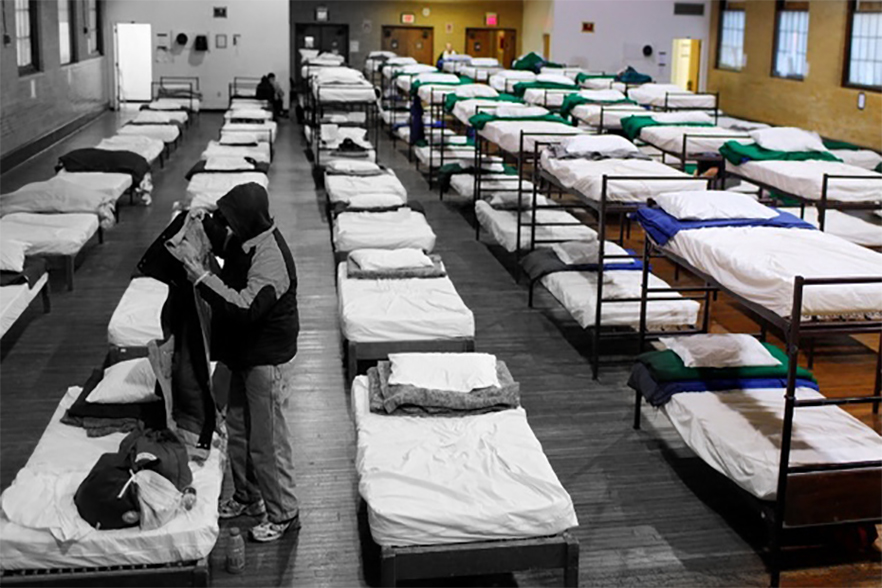
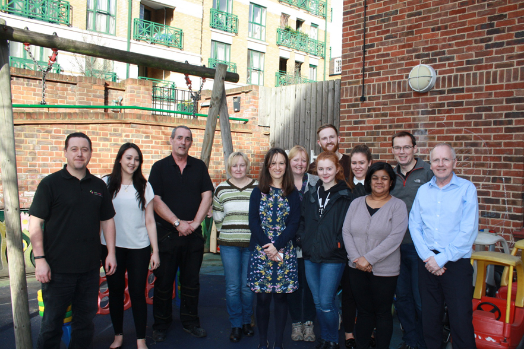

Five months ago, when I was homeless, my life looked like this.
Not knowing where you’re going to sleep or when you’re going to eat are constant worries when you’re homeless, and I was mentally and physically exhausted.

A friend told me about a really good hostel to stay. I didn't want to live in one because of my ego, but I gave it a chance and without expecting it, my life changed.
I eventually met people from Cardinal Hume Centre in the hostel. That's where my life started to get colour.

When I first arrived at the Centre’s hostel, honestly, it was scary. It’s the same feeling as your first day at school. But once I settled in I realised that there was always someone there to help me.
I’ve learned so much and gained so many skills in the four and half months that I’ve been here and I now see a lot of hope within myself.
I feel like the charity has helped me a lot, and I want to give something back by helping people who have the same problems I did.
YOU can help, anyone can. Here's how YOU can help: Donate Volunteer Leave a gift Fundraise Trust and fundations Our charity shop Spread the word Corporate support Do you want to know more? Click here.